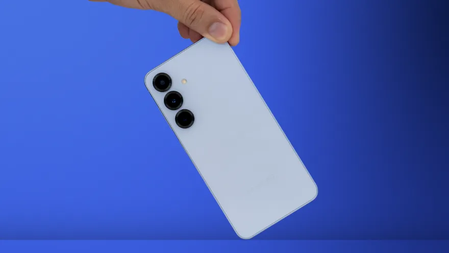

Đánh giá Galaxy S25 sau vài tháng sử dụng: Nhỏ gọn nhưng mạnh mẽ
Minh Tuấn Mobile 8 giờ
Khám phá hiệu năng Z Fold 7 của Samsung
Samcenter 3 giờ
Iphone 17, phá vỡ giới hạn cho dòng điện thoại mới của Apple
Cellphones 6 giờ
Xiaomi 17 Pro Max có gì mới? Khi nào ra mắt?
Cellphones 13 giờ
Xu hướng smartphone 2025: Khi nhu cầu người dùng không còn bị bỏ quên!
60giay 9 giờ